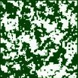
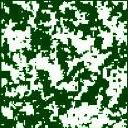
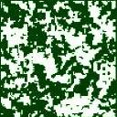
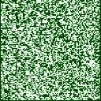
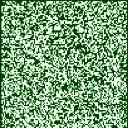
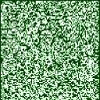
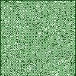
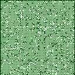
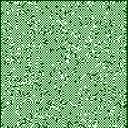

Surveillance of the spatio-temporal patterns: change of
interaction in an Ising dynamic model Eric Järpe
research report 2000:5, Göteborg University, Göteborg
Abstract
Surveillance to detect changes of spatial patterns is of
interest in many areas such as environmental control and
regional analysis. A model which possesses both spatial and
time dependence is the Markov chain Markov field. Here a
special case of this, called Ising dynamic model with
zero external field, and change in its spatial interaction
parameter is considered. A method for simulation exactly
according to this Ising dynamic model, is proposed.
Surveillance methods corresponding to common methods for
the time independent case, are derived.
Get a gzipped postscript copy of the paper
here! (13 pages, 136 kb)
More about the spatio-temporal interaction model here!
Attraction Ising dynamic patterns
at times t-1, t and t+1.



No interaction Ising dynamic patterns
at times t-1, t and t+1.



Repulsion Ising dynamic patterns
at times t-1, t and t+1.


